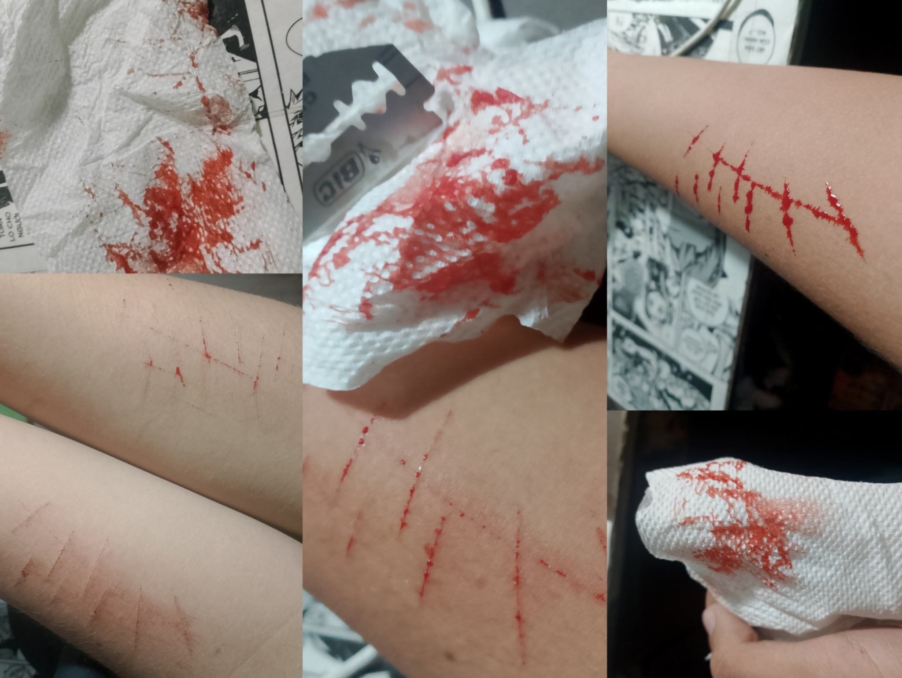
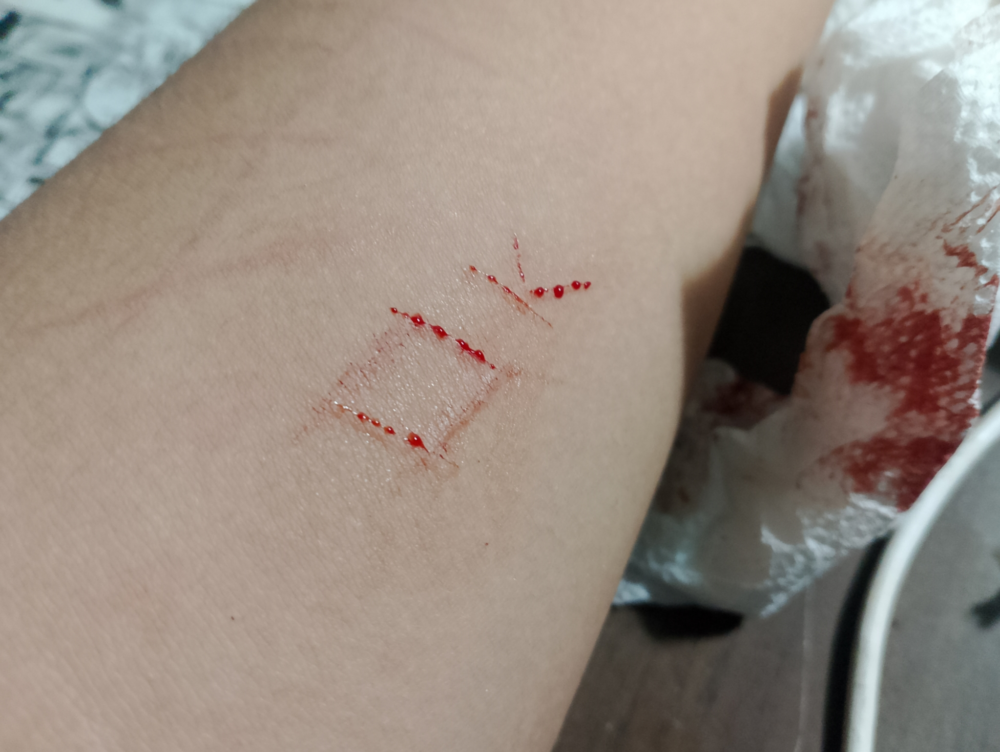
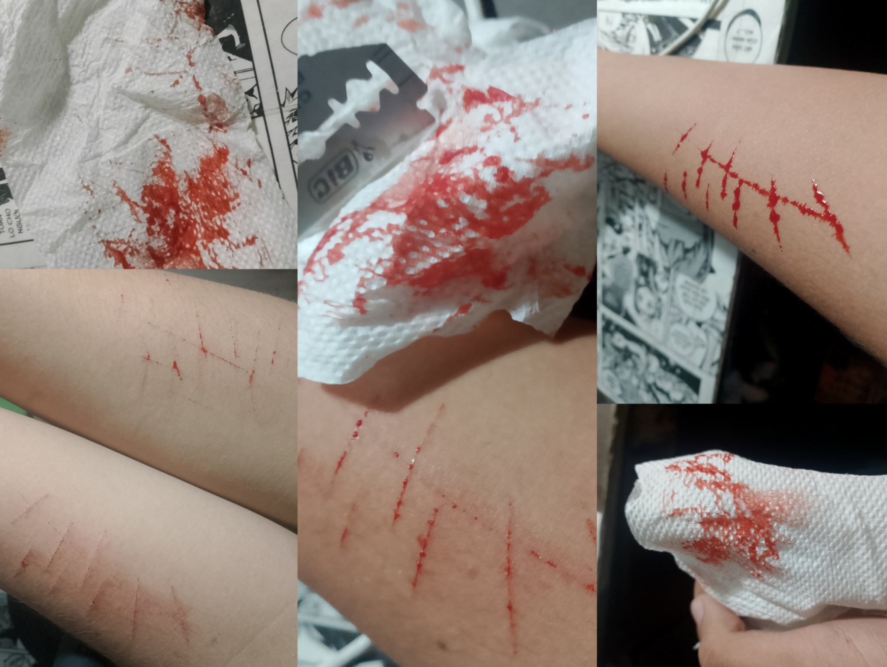
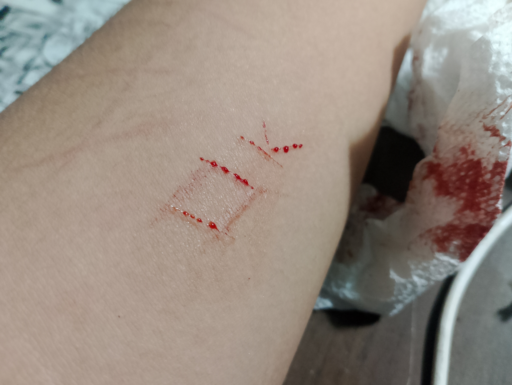

Nhật Ký
• Ngày 4 tháng 3, 2025
Hôm nay là ngày đầu tiên viết nhật ký, thấy cũng lạ lắm ấy.
Hôm nay kiểu như là, không có gì đặc biệt hết
Nhưng
Những cái lời nói của cô ấy thật sự làm mình rất là tổn thương.
Ê NHA
CÁI THẰNG CHA KIA ĐĂNG CÁI BÀI GHỆ MỚI THẤY NGHI VCL, LÀM ƠN ĐỪNG NHƯ MÌNH NGHĨ NHA 🙏
• Ngày 5 tháng 3, 2025
Bữa nay đi học thấy cũng k khác gì thường ngày cho lắm, tại bữa nào cũng đau thôi, chấp nhận.
trong giờ học mình nhìn qua bên kia nhiều lắm, mình thấy rất là buồn, chỉ có một suy nghĩ là
Tại sao? tại sao người ngồi chỗ đó, giỡn hớt nói chuyện với mọi người lại là cái người đó, mà k phải là mình
Nếu nói do ghen tị thì là, đúng, mình thấy rất là ghen tị với nó, nhưng biết sao được, mọi chuyện đã diễn ra như vậy rồi.
Đcm ngày gì đâu tồi tệ vcl, mình ghét nó.
· 12h33 : sao người ta chơi với nhau vui quá vậy nhỉ? ờ ha, mấy tháng sao so được mấy năm 💔
Chiều đi ôn, mong là có cô tố trân ở nhà, cần in 1 số mấy cái sticker để còn làm cái mô hình kia 😔
· 17h10 : sau buổi ôn thấy cũng nhẹ lắm, nhưng mà cô tố trân chưa về, để đợi thì mình đi lang thang xung quanh để giết thời gian
Mình thích cái cảm giác này lắm, cái cảm giác được tự do đi khắp nơi, được ngắm cảnh, không bị ai quản lý, cái cảm giác lạc lõng không có nơi để về
Hoặc có thể nói là
Không có ai cần mình trở về cả.
· 18h57 : cô ấy block mình rồi kìa, cũng không sao đâu nhỉ // nước mắt rơi ướt màn hình r đó //
cảm ơn vì tất cả, mình sẽ sống mãi trong những cái kỉ niệm ngày ấy, vui buồn đều là mình tự chuốt, k có quyền trách cổ.
Chắc đây là những lời cuối của ngày hôm nay rồi, hôm nay viết nhiều phết
Tạm biệt.
• Ngày 6 tháng 3, 2025
Hmmm, nói sao nhỉ
Hôm nay thấy mọi thứ khá là tốt, tâm trạng k vui cũng k buồn, thấy khá ổn
Hên là hôm nay có dặn trước nên có cô ở nhà, đi in hình được, cơ mà nó hơi mờ nha, khó chệu vô cùng 😭
Coi cái nhà búp bê tui làm nè ( còn sơ sài quá gái ơi ) :
 Thấy nó cũng cũng rồi đó.
Về ngay chỗ trường thì gặp cô ấy, mình chỉ muốn lướt qua thôi, mình còn cố tình chạy chậm lại cho cổ đi trước nữa, mình nghĩ là, cổ muốn cắt đứt với mình rồi, mình k nên ngó tới cổ nữa
Cơ mà lúc đến chỗ cầu ấy, cổ vượt lên, mình nghĩ cổ sẽ chạy về luôn k ngó ngàng gì tới mình, nhưng không
Trong 1 khoảnh khắc, cô ấy đưa tay ra chào mình, mình thấy bối rối lắm, nhưng nhiêu đó cũng đủ để ngày hôm nay của mình trở nên vui hơn rồi 🥰
· 19h58 : mới ngủ dậy, giấc ngủ thật dài, nhưng khi thức dậy lại k thấy ai đó nhắn tin cho mình, dù chỉ 1 câu, mình muốn ngủ tiếp.
· 21h57 : nhức đầu vcl, chắc do tắm trễ, phải chi có ai đó quan tâm hỏi han mình nhỉ, mà lỡ mình có chết chắc cũng k có ai để ý đâu.
· 23h31 : lại ăn hơi nhiều nữa rồi, thấy khó chịu ở bụng quá, k hiểu sao nhưng ăn mãi vẫn thấy đói.
• Ngày 7 tháng 3, 2025
· 1h32 : ôi tr ơi, sắp sáng r mà giờ này còn nằm lựa đồ nữa, k biết gái yêu thích món gì để sinh nhật mình còn tặng, hmmm, bao nhiêu tiền là đủ nhỉ, còn quà bánh nữa, cái nhà búp bê kia cũng sắp sắp xong r, chắc ráng nhịn ăn nhịn uống thôi chứ biết sao giờ
Thôi đi ngủ vậy, sáng tính tiếp.
· 6h58 : sáng đi học, lại gặp thằng nhóc kia, hồi đó gặp nó mình sẽ cho tiền, nên bây giờ hễ gặp mình là nó lại kêu mình lại, nhưng biết sao đây, thấy có lỗi quá, mình đang vội với cả cuối tuần hết tiền rồi, sao cho nó được.
hôm nay mình quyết định mặc cái áo hoodie chứ k mặc cái sweater nữa, dù k phải vui nhưng ít ra k lãng phí cái áo người ta tặng cho mình, có mặc áo màu nào thì cũng có ai quan tâm đâu mà lo.
· 12h32 : Uhh nay đi học thấy cũng ấy ấy, hơi khó chịu, mình vẫn k thể rời mắt khỏi cô ấy, mỗi lần có ai kêu tên cổ mình thấy khó chịu lắm, mình vẫn còn ghét cái thằng đó, à k, giờ mình muốn quay ra ghét hết mọi người rồi, xin đừng trách mình.
Bữa nay chắc bỏ bữa trưa, k có tâm trạng ăn uống gì hết
Coi cái tổ 4 nè, ồn hơn cái chợ nữa, giỡn hớt thấy phiền vcl luôn ấy 😔
Thấy nó cũng cũng rồi đó.
Về ngay chỗ trường thì gặp cô ấy, mình chỉ muốn lướt qua thôi, mình còn cố tình chạy chậm lại cho cổ đi trước nữa, mình nghĩ là, cổ muốn cắt đứt với mình rồi, mình k nên ngó tới cổ nữa
Cơ mà lúc đến chỗ cầu ấy, cổ vượt lên, mình nghĩ cổ sẽ chạy về luôn k ngó ngàng gì tới mình, nhưng không
Trong 1 khoảnh khắc, cô ấy đưa tay ra chào mình, mình thấy bối rối lắm, nhưng nhiêu đó cũng đủ để ngày hôm nay của mình trở nên vui hơn rồi 🥰
· 19h58 : mới ngủ dậy, giấc ngủ thật dài, nhưng khi thức dậy lại k thấy ai đó nhắn tin cho mình, dù chỉ 1 câu, mình muốn ngủ tiếp.
· 21h57 : nhức đầu vcl, chắc do tắm trễ, phải chi có ai đó quan tâm hỏi han mình nhỉ, mà lỡ mình có chết chắc cũng k có ai để ý đâu.
· 23h31 : lại ăn hơi nhiều nữa rồi, thấy khó chịu ở bụng quá, k hiểu sao nhưng ăn mãi vẫn thấy đói.
• Ngày 7 tháng 3, 2025
· 1h32 : ôi tr ơi, sắp sáng r mà giờ này còn nằm lựa đồ nữa, k biết gái yêu thích món gì để sinh nhật mình còn tặng, hmmm, bao nhiêu tiền là đủ nhỉ, còn quà bánh nữa, cái nhà búp bê kia cũng sắp sắp xong r, chắc ráng nhịn ăn nhịn uống thôi chứ biết sao giờ
Thôi đi ngủ vậy, sáng tính tiếp.
· 6h58 : sáng đi học, lại gặp thằng nhóc kia, hồi đó gặp nó mình sẽ cho tiền, nên bây giờ hễ gặp mình là nó lại kêu mình lại, nhưng biết sao đây, thấy có lỗi quá, mình đang vội với cả cuối tuần hết tiền rồi, sao cho nó được.
hôm nay mình quyết định mặc cái áo hoodie chứ k mặc cái sweater nữa, dù k phải vui nhưng ít ra k lãng phí cái áo người ta tặng cho mình, có mặc áo màu nào thì cũng có ai quan tâm đâu mà lo.
· 12h32 : Uhh nay đi học thấy cũng ấy ấy, hơi khó chịu, mình vẫn k thể rời mắt khỏi cô ấy, mỗi lần có ai kêu tên cổ mình thấy khó chịu lắm, mình vẫn còn ghét cái thằng đó, à k, giờ mình muốn quay ra ghét hết mọi người rồi, xin đừng trách mình.
Bữa nay chắc bỏ bữa trưa, k có tâm trạng ăn uống gì hết
Coi cái tổ 4 nè, ồn hơn cái chợ nữa, giỡn hớt thấy phiền vcl luôn ấy 😔
 Mong chiều nay học với trồng bông xong sớm sớm để còn chở quách dương về nữa, xong về sạc tối chở nội đi mỹ tú chơi.
· 16h00 : mình mới về tới nhà, thật sự chiều nay rất là khó chịu
Hết hư cái kính thì thôi đi, đi đường chở quách dương về gió thổi vô mỏi mắt vcl, buồn ngủ nữa.
Cái kính chỉ là 1 phần thôi, không sao hết
Nhưng
Đcm tao ghét thằng chó kia, đụ mẹ người ta trồng cây sắp xong r còn sáp sáp lại, thấy cái mặt là tao k ưa rồi, tao định gom đồ rồi về luôn chứ dòm mặt nó 1 hồi tao bực
Đụ má nó k giúp được lôn gì thì thôi đi, đcm còn hất nước lên người tao nữa, đã tao k ưa nó rồi mà còn như vậy nữa, tao ghét nó lắm rồi, sẵn lần này tao lấy cớ tao giận tới già luôn, thằng đàn bà.
Thôi kệ thằng chó đó đi
Bữa nay có việc rồi, nội k đi chơi được
Mình đi ngủ vậy, tiêu cực lắm rồi đó.
Mình thích bài này.
Wow, nhìn người ta kìa, đi ăn đi uống locket đông vui quá nhỉ. ( ganh tị )
Thấy cũng buồn cười phết ấy chứ, từ cái ngày mình rời khỏi bọn họ, tần suất đi ăn đi chơi của họ lại nhiều hơn, hay là họ muốn cho mình thấy rằng không có mình thì họ vẫn vui đúng không?
ĐCM MUỐN XOÁ BỎ CÁI LOCKET QUÁ
· 19h00 : Nội kêu chở lên thiện mỹ ăn mì cay nè hihi
Mong chiều nay học với trồng bông xong sớm sớm để còn chở quách dương về nữa, xong về sạc tối chở nội đi mỹ tú chơi.
· 16h00 : mình mới về tới nhà, thật sự chiều nay rất là khó chịu
Hết hư cái kính thì thôi đi, đi đường chở quách dương về gió thổi vô mỏi mắt vcl, buồn ngủ nữa.
Cái kính chỉ là 1 phần thôi, không sao hết
Nhưng
Đcm tao ghét thằng chó kia, đụ mẹ người ta trồng cây sắp xong r còn sáp sáp lại, thấy cái mặt là tao k ưa rồi, tao định gom đồ rồi về luôn chứ dòm mặt nó 1 hồi tao bực
Đụ má nó k giúp được lôn gì thì thôi đi, đcm còn hất nước lên người tao nữa, đã tao k ưa nó rồi mà còn như vậy nữa, tao ghét nó lắm rồi, sẵn lần này tao lấy cớ tao giận tới già luôn, thằng đàn bà.
Thôi kệ thằng chó đó đi
Bữa nay có việc rồi, nội k đi chơi được
Mình đi ngủ vậy, tiêu cực lắm rồi đó.
Mình thích bài này.
Wow, nhìn người ta kìa, đi ăn đi uống locket đông vui quá nhỉ. ( ganh tị )
Thấy cũng buồn cười phết ấy chứ, từ cái ngày mình rời khỏi bọn họ, tần suất đi ăn đi chơi của họ lại nhiều hơn, hay là họ muốn cho mình thấy rằng không có mình thì họ vẫn vui đúng không?
ĐCM MUỐN XOÁ BỎ CÁI LOCKET QUÁ
· 19h00 : Nội kêu chở lên thiện mỹ ăn mì cay nè hihi
 · 23h13 : huhu quên chuẩn bị quà 8/3 cho gái yêu ròiii, chắc chúc vài câu đi chứ trong túi còn đồng nào đâu 😭
• Ngày 8 tháng 3, 2025
· 8h54 : Ngủ mới dậy, ôi tr ơi lại cúp điện nữa, khó chịu.
Mình thích ngủ, không phải do buồn ngủ hay gì đâu, chỉ bởi vì, lúc ngủ dậy mình thấy rất nhẹ nhõm, cảm giác không vui không buồn, không có tí cảm xúc nào hết.
· 17h30 : Hôm qua mới ăn mì cay xong bữa nay đi nữa ạ 😔
· 23h13 : huhu quên chuẩn bị quà 8/3 cho gái yêu ròiii, chắc chúc vài câu đi chứ trong túi còn đồng nào đâu 😭
• Ngày 8 tháng 3, 2025
· 8h54 : Ngủ mới dậy, ôi tr ơi lại cúp điện nữa, khó chịu.
Mình thích ngủ, không phải do buồn ngủ hay gì đâu, chỉ bởi vì, lúc ngủ dậy mình thấy rất nhẹ nhõm, cảm giác không vui không buồn, không có tí cảm xúc nào hết.
· 17h30 : Hôm qua mới ăn mì cay xong bữa nay đi nữa ạ 😔
 · 20h00 : mình nhớ cô ấy quá, mình nhớ những kỉ niệm, nhớ những lúc được bên cạnh cổ, mỗi lần nhớ đến mình thấy rất luyến tiếc, giờ đây mình muốn có cô ấy ở đây, được ôm cô ấy, nắm tay cô ấy, được đi dạo phố đêm với cổ như cái ngày hôm ấy.
Tệ thật, mỗi lần nghe bài hát này mình lại nhớ đến cô ấy, hay nói đúng hơn là những kỉ niệm lúc được ở bên cạnh cổ, cái đêm đà lạt nắm tay đi dạo phố ấy, thật sự rất là nhớ.
· 22h16 : biết sao giờ nhỉ, cảm giác như đang ép cô ấy yêu 1 người mà cổ không yêu vậy, nhưng thật sự mình lại rất yêu cô ấy.
No no no ta không hợp
Ước gì được như bài này thì vui biết mấy 😔
· 23h20 : huhu nhắn biết bao lâu rồi cô ấy k thèm rep mình luôn kìa, facebook chấm xanh mà vậy đó 😭😭😭😭😭
ỦA ĐỤ MẸ MẮC CƯỜI HA
nhắn từ tuốt đời nào r tới lúc t để cái ghi chú mes "Sao em không rep?" thì mới chịu trả lời, coi t là cái gì mà ghost cỡ đó, khó chịu vcl, trả lời hời hợt cho có vậy đó, nhắm im được thì im luôn đi.
Bực quá nói vậy thôi chứ
Bộ nghĩ tui dễ bỏ cuộc lắm hả gái, ráng làm như vậy với tui là để thử sức chịu đựng của tui hay sao ?
Làm vậy tui đau lắm chứ gái, đâu ai biết người mình thương nhất lại làm vậy với mình đâu, tui k có thích cái cảm giác bị người ta lơ đi, lúc ẩn lúc hiện, tui tuy đối với gái chắc hẳn là không quan trọng như cũng làm ơn đừng như vậy được không
Tim tui đau lắm.
• Ngày 9 tháng 3, 2025
· 0h27 : tệ thật, mình muốn khóc, sau tất cả những gì cô ấy đã đối xử với mình.
muốn chửi nó lắm, muốn xả hết vô mặt nó, muốn chất vấn nó đủ thứ, ủa sao k rep tin nhắn t đi, tám chuyện với người khác, t tin m lắm chứ, nhưng bộ đui hay sao mà t nhắn k thấy, suốt ngày cứ lí do, ghét t k muốn rep thì nói mẹ nó ra đi để t khỏi đợi, đụ mẹ bực vcl, lồn hết sức
Nhưng biết sao đây
T lại thương m, k nỡ gửi mấy lời này tới m, chỉ là t muốn xả hết vào đây để nhẹ lòng thôi, chứ thật sự m có đối xử với t ra sao đi nữa thì t vẫn muốn được ở bên m mà thôi.
Vậy thôi, đi ngủ đi, t khóc tí r ngủ, chắc ngon lắm á gái.
· 12h24 :
"Bạn thân thường yêu nhau", đúng không em?
· 18h01 : Yêu 1 người là bao lâu nhỉ? mình k thể ngừng nghĩ đến cô ấy, mình muốn khóc, khóc thật nhiều, tại sao cô ấy lại không yêu mình chứ, liệu có đáng nếu cứ theo đuổi mãi 1 người không yêu mình? nhưng mình lại rất yêu cổ, mình muốn được ở bên cạnh cổ, được nắm tay, ôm ấp, được đi chơi, đi dạo phố, được nghe cô ấy hát, thao thao nói chuyện với mình, mình yêu cô ấy, yêu tất cả về cô ấy, nhưng phải làm sao đây, cô ấy không yêu mình.
· 19h00 : mình k nghĩ hoàn cảnh gia đình của người ta lại như vậy, mình thấy tội tội sao á, có lẽ 1 phần nào đó mình thấy được con người mình trong câu chuyện của họ.
· 21h10 : mua cái áo khoảng 300k, mỗi tuần đi học được có 150k, để giành 1 tuần 50k, 6 tuần mới đủ 300, khoảng 1 tháng rưỡi, đủ 300k chắc khoảng giữa tháng 4 đầu tháng 5, còn mua bánh kẹo đồ nữa, mình k muốn tính toán như thế này, ước gì nhà mình giàu hơn nhỉ?
Bài này nghe u ám, như cuộc đời mình vậy.
· 22h49 : bữa nay có mưa nữa, phải chi hôm qua mưa đi ngủ cho đã 😡
Nghe bài này xong lại nhớ cô ấy nữa 😭
Ê cái bài mophai này nghe đúng hay luôn á, nghe là nhớ lại 1 thời thất tình nằm ôm gối khóc 😶
• Ngày 10 tháng 3, 2025
Mình chán cái cuộc sống này lắm r, gửi tới B, thật sự t rất yêu m, yêu m nhiều lắm, t muốn được ở bên m, t luôn muốn đi tìm m, t muốn đi theo m, dù là m có phũ phàng với t như thế nào thì t vẫn rất yêu m, thật sự t chưa yêu ai đến thế, t muốn giành hết cuộc đời mình cho m, dù là 2 ta theo m nói là k hợp, nhưng mà B ơi, t thương m lắm, t yêu m lắm, t thật sự rất rất là yêu m, nhiều hơn bất cứ thứ gì, t biết là k thể gượng ép m yêu t nhưng mà những lời này t vẫn muốn nói, t yêu m nhiều lắm 😭
t thật sự t muốn đi chết, t muốn trốn tránh cái thực tại này, t muốn đến 1 nơi chỉ có riêng t với m, được sống những ngày hạnh phúc, t ghét bản thân, ghét cả những người xung quanh, mấy ngày hôm nay t muốn chết lắm, muốn xoá locket, muốn dục bỏ cái điện thoại, k muốn thấy cảnh mọi người đi chơi mà k có mình ở đấy
Với cả, sau đây t sẽ nói 1 số lời rất là quá đáng, nhưng thật sự nó đến từ tận đáy lòng của t
Thật sự là, t vẫn còn rất là ghét H, t ghét mỗi khi nó ở gần m, mỗi khi nó đi ăn với m, mỗi khi nó đi chơi chung với m, mỗi khi nó giỡn với m trong giờ học, nói chung là tất cả những lúc nó ở bên cạnh m, t đều ghét, mỗi lần thấy những cảnh đó t chỉ muốn chết đi cho xong thôi, t k muốn sống nữa, t ghét việc nó cứ mãi ở bên cạnh m, t thấy bị đe doạ, rất là nhiều, mỗi lúc chạy xe t chỉ nghĩ đến 1 thứ trong đầu, đó là chửi nó, mắng nó, trách nó, dùng mọi từ ngữ t có thể nghĩ ra để chỉ trích nó, t ghét nó vì nó giàu hơn t, nó bên cạnh m lâu hơn t, nó được ở bên cạnh m, nói chung là mọi thứ nó đều hơn t, t ghét nó vì nó luôn được mọi người đề cao, tại sao chứ ? t cũng làm được như nó mà? sao k ai quan tâm tới t chứ?????
Sau đây là 1 số lời muốn gửi đến H, những lời này rất là tiêu cực, nhưng thật sự t muốn nói
## ### ## ### # ### # #### # ### ### ##### #### ### ## ## ### ## ## ## # ### ## ##### ## #### #### ### # ### #### ### ### ### # ### ### ### # ## ### ### #### ### ### ### ### ### # #### # ### ##### #### ### ## ### ### ## ### ## #### ### #### ### ##### ### ##### ### ## ##### ## # ### # #### ## #### #### #### #### #### ### #### ## ## # ### #### #### ## ### ### # #### # ### # #### ### ## ### #### ### #### #### ### # ### ### ### # ## ### #### #### #### # #### ### #### ### # #### # #### ### #### ### #### #### ## # ### ### ## ### ### #### # ## ### ## ## # #### ### #### ## ## ## # #### ### ## ### #### # ### ## # # #### ## ## # #### ### ### #### ### ### #### ### #### ### ##### # #### ### ### ## #### ### ## ### ##### ### #### ## ## ## #### ##### ## ### ### ### #### ## #### ### ### # #### ## ## # ##### ####
Lời t muốn nói còn nhiều lắm, làm ơn đừng trách t, xin đấy 🙏
B ơi, xin m đấy, nghe xong những lời này đừng trách t, t biết nó là bạn thân m nhưng mà, trong những cái vệ tinh xung quanh m thì nó là người t ghét nhất, xin đấy, lời t nói là quá đáng, nhưng t chỉ muốn trút hết ra ở đây thôi, đi học thấy 2 người chơi vui với nhau t buồn lắm.

Thấy sao gái? đẹp không? là do 2 người gây ra cho tôi đó.

"ok", mặc kệ tui đi gái, sống chết gì cũng đâu có sao đâu.
Xin lỗi gái nhiều nha, là tui k giữ lời hứa, tui rạch tay, nhưng mà gái ơi
Đến gái cũng đâu có giữ được lời nói đâu, đừng trách em nha chế.
Ê muốn đăng vid này 😭
• Ngày 12 tháng 3, 2025
Buồn cười thay, kẻ tự làm đau bản thân mình để níu lấy sự thương cảm của người khác, lại chỉ nhận về những lời chê bai, chửi mắng, bị cô lập, xa lánh, bộ các người nghĩ thật sự tôi làm vậy vì tôi thích à? có biết cảm giác dao cắt vào tay đau như thế nào không? tôi ghét cái thế giới này, tôi ghét tất cả, biến hết ra khỏi cuộc đời tôi đi, tôi cần những người ở bên an ủi vỗ về tôi chứ không phải sự kì thị của các người.
Các người có biết đêm nào tôi cũng khóc đến sưng cả mắt không?
Bộ mấy người nghĩ dễ lắm hả? bày đặt khuyên nhủ này kia, nói là ơ cuộc sống còn nhiều điều tốt hơn các thứ các thứ, còn những cách làm khác này kia k có nên gạch tay như vậy, ủa đụ mẹ nó các người đâu có ở trong hoàn cảnh của người ta đâu mà biết, cứ ở ngoài đó chê bai như đúng rồi vậy đó, thật sự con người người ta phải tuyệt vọng lắm rồi người ta mới tìm tới việc như vậy, đâu có ai muốn bản thân mình như vậy đâu, do hoàn cảnh thôi, mà các người đâu có ở trong hoàn cảnh của tôi đâu mà hiểu?
Mạng sống này là của tôi, thể xác này là của tôi, các người không có cái quyền phán xét người khác, tôi làm gì thì kệ tôi chứ có chém giết ai đâu mà sợ, hiểu không?
Mấy người không quan tâm thì thôi chứ, đừng kì thị được không?
Trai Tim Cung Biet Dau.
• Ngày 13 tháng 3, 2025
Qua giờ mình suy nghĩ nhiều lắm, mình tự nhìn nhận lại việc làm của bản thân, mình thấy đến lúc mình phải thay đổi r, phải sống vì mình, phải trở nên tốt hơn, gái đi rồi, mình đâu còn vướng bận gì nữa, cũng k nên tổn thương bản thân, thấy k đáng, phải thay đổi thôi, đến 1 ngày nào đó mình với gái gặp lại, mong là lúc đó bản thân sẽ sống tốt hơn bây giờ.
Sáng học xong thì tui với 2 bô có đi dạo xung quanh chơi, đang tám chuyện này kia thì nó có nói với tui, nó thắc mắc là tại sao đó giờ nó thấy gái cứ bị sợ con trai với cả ít cho đụng chạm này kia, nhưng mà lúc đi đà lạt nó lại thấy trên xe tui với gái cứ dính nhau , còn cho dựa vai khoác tay đồ nữa, tui cũng nói với nó là chắc gái xem tui là em trai thôi nên k có lo gì nhiều, nói vậy chứ trước đó tui cũng có thắc mắc sao gái lại dám cho tui lại gần như vậy, còn cho nắm tay nữa, nhưng mà sau hôm qua thì tui có câu trả lời rồi
Cảm ơn gái rất nhiều, vì khoảng thgian qua.
• Ngày 14 tháng 3, 2025
· 0h02 :
Mất chuỗi mất pet r kìa gái, sau đêm qua tui thấy bản thân nhẹ nhõm lắm, dù là vẫn còn bận tâm về gái, nhưng mà k còn như trước nữa, tui thấy mình lạnh nhạt hơn, k còn để tâm đến người khác, k cần phải bận tâm về điều gì hết, tình cảm của tui chắc cũng phai nhanh thôi
Cơ mà
Yên tâm đi gái, tui nguyện làm lốp mà, tình cảm của tui viết hết vào đây, nếu 1 ngày nào đó cảm xúc của tui giành cho gái k còn được như bây giờ nữa thì việc tui cần làm chỉ là đọc lại những dòng chữ này để biết mình đã từng yêu gái đến mức nào thôi.
K biết gái có đọc được những dòng chữ này hay k nữa
Cơ mà tui muốn hỏi ý gái, nếu gái có trả lời thì để trên ghi chú mes nha
Tui muốn hỏi gái thích quà gì á, áo quần giày gì đó, để mấy cái icon kiểu 👚👖👟 lên ghi chú là tui hiểu r
Với cả gái có thích ăn bánh kẹo đồ hong, nếu mà có thì để thêm cái icon 🍬
Cuối cùng là, nếu gái từ chối k muốn nhận quà sn từ tui thì
Cứ để ❌, vậy nha
· 20h00 : mình nhớ cô ấy quá, mình nhớ những kỉ niệm, nhớ những lúc được bên cạnh cổ, mỗi lần nhớ đến mình thấy rất luyến tiếc, giờ đây mình muốn có cô ấy ở đây, được ôm cô ấy, nắm tay cô ấy, được đi dạo phố đêm với cổ như cái ngày hôm ấy.
Tệ thật, mỗi lần nghe bài hát này mình lại nhớ đến cô ấy, hay nói đúng hơn là những kỉ niệm lúc được ở bên cạnh cổ, cái đêm đà lạt nắm tay đi dạo phố ấy, thật sự rất là nhớ.
· 22h16 : biết sao giờ nhỉ, cảm giác như đang ép cô ấy yêu 1 người mà cổ không yêu vậy, nhưng thật sự mình lại rất yêu cô ấy.
No no no ta không hợp
Ước gì được như bài này thì vui biết mấy 😔
· 23h20 : huhu nhắn biết bao lâu rồi cô ấy k thèm rep mình luôn kìa, facebook chấm xanh mà vậy đó 😭😭😭😭😭
ỦA ĐỤ MẸ MẮC CƯỜI HA
nhắn từ tuốt đời nào r tới lúc t để cái ghi chú mes "Sao em không rep?" thì mới chịu trả lời, coi t là cái gì mà ghost cỡ đó, khó chịu vcl, trả lời hời hợt cho có vậy đó, nhắm im được thì im luôn đi.
Bực quá nói vậy thôi chứ
Bộ nghĩ tui dễ bỏ cuộc lắm hả gái, ráng làm như vậy với tui là để thử sức chịu đựng của tui hay sao ?
Làm vậy tui đau lắm chứ gái, đâu ai biết người mình thương nhất lại làm vậy với mình đâu, tui k có thích cái cảm giác bị người ta lơ đi, lúc ẩn lúc hiện, tui tuy đối với gái chắc hẳn là không quan trọng như cũng làm ơn đừng như vậy được không
Tim tui đau lắm.
• Ngày 9 tháng 3, 2025
· 0h27 : tệ thật, mình muốn khóc, sau tất cả những gì cô ấy đã đối xử với mình.
muốn chửi nó lắm, muốn xả hết vô mặt nó, muốn chất vấn nó đủ thứ, ủa sao k rep tin nhắn t đi, tám chuyện với người khác, t tin m lắm chứ, nhưng bộ đui hay sao mà t nhắn k thấy, suốt ngày cứ lí do, ghét t k muốn rep thì nói mẹ nó ra đi để t khỏi đợi, đụ mẹ bực vcl, lồn hết sức
Nhưng biết sao đây
T lại thương m, k nỡ gửi mấy lời này tới m, chỉ là t muốn xả hết vào đây để nhẹ lòng thôi, chứ thật sự m có đối xử với t ra sao đi nữa thì t vẫn muốn được ở bên m mà thôi.
Vậy thôi, đi ngủ đi, t khóc tí r ngủ, chắc ngon lắm á gái.
· 12h24 :
"Bạn thân thường yêu nhau", đúng không em?
· 18h01 : Yêu 1 người là bao lâu nhỉ? mình k thể ngừng nghĩ đến cô ấy, mình muốn khóc, khóc thật nhiều, tại sao cô ấy lại không yêu mình chứ, liệu có đáng nếu cứ theo đuổi mãi 1 người không yêu mình? nhưng mình lại rất yêu cổ, mình muốn được ở bên cạnh cổ, được nắm tay, ôm ấp, được đi chơi, đi dạo phố, được nghe cô ấy hát, thao thao nói chuyện với mình, mình yêu cô ấy, yêu tất cả về cô ấy, nhưng phải làm sao đây, cô ấy không yêu mình.
· 19h00 : mình k nghĩ hoàn cảnh gia đình của người ta lại như vậy, mình thấy tội tội sao á, có lẽ 1 phần nào đó mình thấy được con người mình trong câu chuyện của họ.
· 21h10 : mua cái áo khoảng 300k, mỗi tuần đi học được có 150k, để giành 1 tuần 50k, 6 tuần mới đủ 300, khoảng 1 tháng rưỡi, đủ 300k chắc khoảng giữa tháng 4 đầu tháng 5, còn mua bánh kẹo đồ nữa, mình k muốn tính toán như thế này, ước gì nhà mình giàu hơn nhỉ?
Bài này nghe u ám, như cuộc đời mình vậy.
· 22h49 : bữa nay có mưa nữa, phải chi hôm qua mưa đi ngủ cho đã 😡
Nghe bài này xong lại nhớ cô ấy nữa 😭
Ê cái bài mophai này nghe đúng hay luôn á, nghe là nhớ lại 1 thời thất tình nằm ôm gối khóc 😶
• Ngày 10 tháng 3, 2025
Mình chán cái cuộc sống này lắm r, gửi tới B, thật sự t rất yêu m, yêu m nhiều lắm, t muốn được ở bên m, t luôn muốn đi tìm m, t muốn đi theo m, dù là m có phũ phàng với t như thế nào thì t vẫn rất yêu m, thật sự t chưa yêu ai đến thế, t muốn giành hết cuộc đời mình cho m, dù là 2 ta theo m nói là k hợp, nhưng mà B ơi, t thương m lắm, t yêu m lắm, t thật sự rất rất là yêu m, nhiều hơn bất cứ thứ gì, t biết là k thể gượng ép m yêu t nhưng mà những lời này t vẫn muốn nói, t yêu m nhiều lắm 😭
t thật sự t muốn đi chết, t muốn trốn tránh cái thực tại này, t muốn đến 1 nơi chỉ có riêng t với m, được sống những ngày hạnh phúc, t ghét bản thân, ghét cả những người xung quanh, mấy ngày hôm nay t muốn chết lắm, muốn xoá locket, muốn dục bỏ cái điện thoại, k muốn thấy cảnh mọi người đi chơi mà k có mình ở đấy
Với cả, sau đây t sẽ nói 1 số lời rất là quá đáng, nhưng thật sự nó đến từ tận đáy lòng của t
Thật sự là, t vẫn còn rất là ghét H, t ghét mỗi khi nó ở gần m, mỗi khi nó đi ăn với m, mỗi khi nó đi chơi chung với m, mỗi khi nó giỡn với m trong giờ học, nói chung là tất cả những lúc nó ở bên cạnh m, t đều ghét, mỗi lần thấy những cảnh đó t chỉ muốn chết đi cho xong thôi, t k muốn sống nữa, t ghét việc nó cứ mãi ở bên cạnh m, t thấy bị đe doạ, rất là nhiều, mỗi lúc chạy xe t chỉ nghĩ đến 1 thứ trong đầu, đó là chửi nó, mắng nó, trách nó, dùng mọi từ ngữ t có thể nghĩ ra để chỉ trích nó, t ghét nó vì nó giàu hơn t, nó bên cạnh m lâu hơn t, nó được ở bên cạnh m, nói chung là mọi thứ nó đều hơn t, t ghét nó vì nó luôn được mọi người đề cao, tại sao chứ ? t cũng làm được như nó mà? sao k ai quan tâm tới t chứ?????
Sau đây là 1 số lời muốn gửi đến H, những lời này rất là tiêu cực, nhưng thật sự t muốn nói
## ### ## ### # ### # #### # ### ### ##### #### ### ## ## ### ## ## ## # ### ## ##### ## #### #### ### # ### #### ### ### ### # ### ### ### # ## ### ### #### ### ### ### ### ### # #### # ### ##### #### ### ## ### ### ## ### ## #### ### #### ### ##### ### ##### ### ## ##### ## # ### # #### ## #### #### #### #### #### ### #### ## ## # ### #### #### ## ### ### # #### # ### # #### ### ## ### #### ### #### #### ### # ### ### ### # ## ### #### #### #### # #### ### #### ### # #### # #### ### #### ### #### #### ## # ### ### ## ### ### #### # ## ### ## ## # #### ### #### ## ## ## # #### ### ## ### #### # ### ## # # #### ## ## # #### ### ### #### ### ### #### ### #### ### ##### # #### ### ### ## #### ### ## ### ##### ### #### ## ## ## #### ##### ## ### ### ### #### ## #### ### ### # #### ## ## # ##### ####
Lời t muốn nói còn nhiều lắm, làm ơn đừng trách t, xin đấy 🙏
B ơi, xin m đấy, nghe xong những lời này đừng trách t, t biết nó là bạn thân m nhưng mà, trong những cái vệ tinh xung quanh m thì nó là người t ghét nhất, xin đấy, lời t nói là quá đáng, nhưng t chỉ muốn trút hết ra ở đây thôi, đi học thấy 2 người chơi vui với nhau t buồn lắm.

Thấy sao gái? đẹp không? là do 2 người gây ra cho tôi đó.

"ok", mặc kệ tui đi gái, sống chết gì cũng đâu có sao đâu.
Xin lỗi gái nhiều nha, là tui k giữ lời hứa, tui rạch tay, nhưng mà gái ơi
Đến gái cũng đâu có giữ được lời nói đâu, đừng trách em nha chế.
Ê muốn đăng vid này 😭
• Ngày 12 tháng 3, 2025
Buồn cười thay, kẻ tự làm đau bản thân mình để níu lấy sự thương cảm của người khác, lại chỉ nhận về những lời chê bai, chửi mắng, bị cô lập, xa lánh, bộ các người nghĩ thật sự tôi làm vậy vì tôi thích à? có biết cảm giác dao cắt vào tay đau như thế nào không? tôi ghét cái thế giới này, tôi ghét tất cả, biến hết ra khỏi cuộc đời tôi đi, tôi cần những người ở bên an ủi vỗ về tôi chứ không phải sự kì thị của các người.
Các người có biết đêm nào tôi cũng khóc đến sưng cả mắt không?
Bộ mấy người nghĩ dễ lắm hả? bày đặt khuyên nhủ này kia, nói là ơ cuộc sống còn nhiều điều tốt hơn các thứ các thứ, còn những cách làm khác này kia k có nên gạch tay như vậy, ủa đụ mẹ nó các người đâu có ở trong hoàn cảnh của người ta đâu mà biết, cứ ở ngoài đó chê bai như đúng rồi vậy đó, thật sự con người người ta phải tuyệt vọng lắm rồi người ta mới tìm tới việc như vậy, đâu có ai muốn bản thân mình như vậy đâu, do hoàn cảnh thôi, mà các người đâu có ở trong hoàn cảnh của tôi đâu mà hiểu?
Mạng sống này là của tôi, thể xác này là của tôi, các người không có cái quyền phán xét người khác, tôi làm gì thì kệ tôi chứ có chém giết ai đâu mà sợ, hiểu không?
Mấy người không quan tâm thì thôi chứ, đừng kì thị được không?
Trai Tim Cung Biet Dau.
• Ngày 13 tháng 3, 2025
Qua giờ mình suy nghĩ nhiều lắm, mình tự nhìn nhận lại việc làm của bản thân, mình thấy đến lúc mình phải thay đổi r, phải sống vì mình, phải trở nên tốt hơn, gái đi rồi, mình đâu còn vướng bận gì nữa, cũng k nên tổn thương bản thân, thấy k đáng, phải thay đổi thôi, đến 1 ngày nào đó mình với gái gặp lại, mong là lúc đó bản thân sẽ sống tốt hơn bây giờ.
Sáng học xong thì tui với 2 bô có đi dạo xung quanh chơi, đang tám chuyện này kia thì nó có nói với tui, nó thắc mắc là tại sao đó giờ nó thấy gái cứ bị sợ con trai với cả ít cho đụng chạm này kia, nhưng mà lúc đi đà lạt nó lại thấy trên xe tui với gái cứ dính nhau , còn cho dựa vai khoác tay đồ nữa, tui cũng nói với nó là chắc gái xem tui là em trai thôi nên k có lo gì nhiều, nói vậy chứ trước đó tui cũng có thắc mắc sao gái lại dám cho tui lại gần như vậy, còn cho nắm tay nữa, nhưng mà sau hôm qua thì tui có câu trả lời rồi
Cảm ơn gái rất nhiều, vì khoảng thgian qua.
• Ngày 14 tháng 3, 2025
· 0h02 :
Mất chuỗi mất pet r kìa gái, sau đêm qua tui thấy bản thân nhẹ nhõm lắm, dù là vẫn còn bận tâm về gái, nhưng mà k còn như trước nữa, tui thấy mình lạnh nhạt hơn, k còn để tâm đến người khác, k cần phải bận tâm về điều gì hết, tình cảm của tui chắc cũng phai nhanh thôi
Cơ mà
Yên tâm đi gái, tui nguyện làm lốp mà, tình cảm của tui viết hết vào đây, nếu 1 ngày nào đó cảm xúc của tui giành cho gái k còn được như bây giờ nữa thì việc tui cần làm chỉ là đọc lại những dòng chữ này để biết mình đã từng yêu gái đến mức nào thôi.
K biết gái có đọc được những dòng chữ này hay k nữa
Cơ mà tui muốn hỏi ý gái, nếu gái có trả lời thì để trên ghi chú mes nha
Tui muốn hỏi gái thích quà gì á, áo quần giày gì đó, để mấy cái icon kiểu 👚👖👟 lên ghi chú là tui hiểu r
Với cả gái có thích ăn bánh kẹo đồ hong, nếu mà có thì để thêm cái icon 🍬
Cuối cùng là, nếu gái từ chối k muốn nhận quà sn từ tui thì
Cứ để ❌, vậy nha